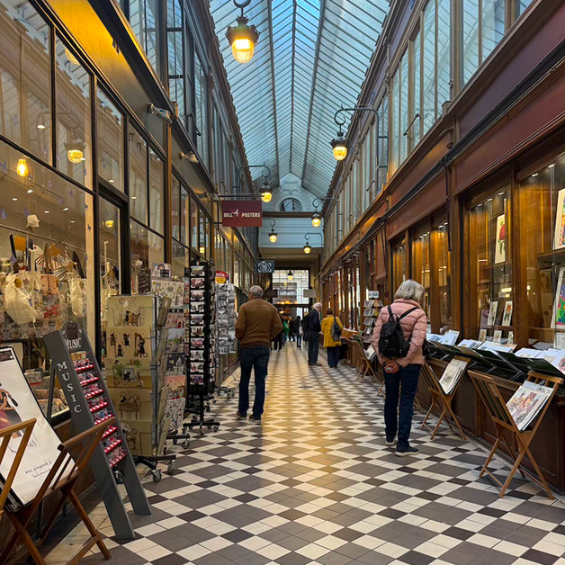
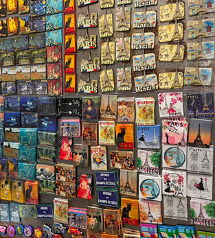
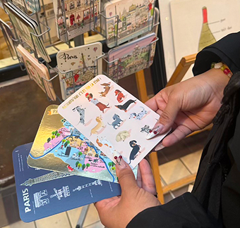
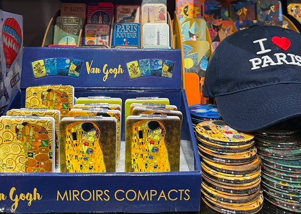

Open around 10am
Close around 7-8pm


This is definitely not your typical street for souvenir shopping. If you’re looking for the usual row of outdoor stores, you won't find them here. Instead, this is the Passage des Panoramas, which is one of Paris’s oldest covered walkways. Because it’s tucked away from the main boulevard, the vibe is completely different. It’s a beautiful, historic mix of restaurants, cozy cafes, and hidden boutiques that feels much more local and gatekept than the bigger tourist hubs.
Staff friendliness: Major highlight for me. In a city where shopping can sometimes feel a bit rushed, the people working here were great. They spoke English well and were genuinely happy to help out if we had questions.
Store Variety: We found a huge range of Paris keychains and postcard designs that we didn't see at any other souvenir shop in the city. There’s a level of uniqueness here that you just don't get on the more commercial streets. You can find hand-drawn illustrations and vintage-style prints that feel much more special for friends and family back home.
Store Size: When you’re walking through the passage, the stores look tiny and narrow almost like little glass boxes. But once you actually step inside, most of the shops totally surprise you. A lot of them actually have two levels. Because of that extra space, the products you can find are endless.
Prices: Most importantly, the prices stayed very budget-friendly, proving that you don't have to sacrifice style for a low price point. This spot is for you if you want a curated haul without the typical tourist-trap stress. I definitely saw less discounts for when you buy a bulk of items.

One of Paris’ oldest covered walkways!
8€ - 30€ per item

